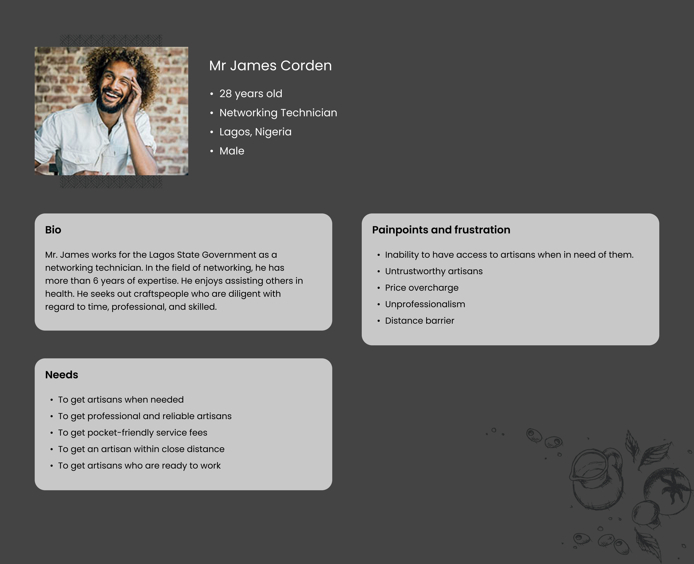

ZoomScoots Web App

Project Overview
The E-Scooter project aims to revolutionize urban transportation by providing a cost-effective, eco-friendly, and convenient solution for residents and visitors. With the vision of creating a reliable alternative to traditional commuting and short-distance travel, we are committed to building a comprehensive E-Scooter network.
Objective:
Our primary goal is to establish a widespread E-Scooter sharing service that offers a seamless, affordable, and sustainable mode of transportation within communities. Key objectives include:
- Affordability: Develop E-Scooters and a docking system that is accessible to a broad range of users, making short trips more affordable than traditional means of transportation.
- Sustainability: Promote eco-friendly transportation options to reduce carbon emissions, alleviate traffic congestion, and improve air quality in urban areas.
- Convenience: Offer an easy and user-friendly experience, allowing customers to locate, rent, and return E-Scooters conveniently.
- Profitability: Build a sustainable business model that provides investors with a lucrative opportunity for growth and return on investment.
User Personas
Fig 1.1
Problem Statement
The challenge with existing artisan service apps is the lack of efficient user-artisan connections. Users struggle to discover skilled artisans nearby, leading to delayed service requests. Our goal is to create an artisan app that streamlines these connections, making it easier for users to find and hire local artisans promptly.
Requirements
While working on the project, I was able to develop a list of security, functional, and usability requirements for the application. From the users trying to board the scooters to the users who want to confirm payments in relation to their account registration.
- For security, the web app should be available only to authenticated users and should be served over HTTPS.
- Users should be able to view camera location on a map view.
- Users should be able to input transaction information on the user interface which accepts them.
- Users should be able to complete fees payment transaction online, using their e-wallet.
- The system shall produce a receipt as a proof of payment for every ride taken.
- The system should be compatible with different screen sizes and fast enough.
- The system should be easy to navigate with a user-friendly interface.
Wireframe
In the wireframe section, I dive into the structural foundation of our artisan app. These simplified, grayscale visual representations helps me outline the app's layout, features, and user flow, setting the stage for a well-structured and user-friendly design.
Splash Screen
The splash screen provides a captivating introduction, setting the stage for an engaging and efficient experience within the artisan app.
Onboarding
The Average App Loses ~77% Of Its Users In The First Three Days
The goal of the on-boarding is to guide the users through a seamless journey to set up their profiles and start connecting with local artisans effortlessly.
Log In & Sign Up
This is is the first impression of our app. We want it to reflect what we stand for: The minimalistic, clean and fresh aesthetic.
We allowed quick login from Facebook and Twitter as they don’t really need to fill up the same information. Based on feedback from friends, I brought in email sign ups as well, but I kept it secondary.
Color Palette
Designing a beautiful interface is as important as designing the best flow. We wanted to keep the entire design minimal, clean, and fresh.
We knew we needed blue in our primary palette. not just because we all liked blue. The colour helps in improving the flow of communication and we believe it is really important for us, as we are placing our self as the premier application for sourcing artisans.
The next step was to find out the best and unique blue. It should represent our brand, Bunu. It should also be different from Facebook, Twitter and any other app colours.
In conclusion, Bunu mobile app is the result of a dedicated team's effort to bridge the gap between users and skilled artisans. By focusing on user-friendly design, efficient communication, and a streamlined review process, we aim to enhance the experience for both those seeking services and the artisans offering them. The goal is to create a community that values transparency, trust, and quality service. I'm excited about the future of this platform and look forward to continually improving it based on user feedback and evolving needs. I built a reliable solution that connects users with artisans, making service discovery and hiring hassle-free.